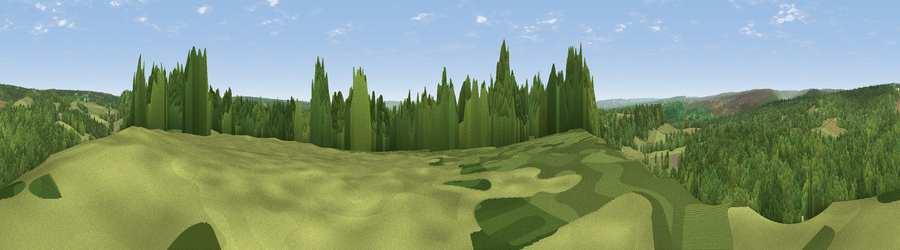

Viewpoint near Cropton
#18806 in England · top 44% of its area beats it · near CroptonThe view, rendered

A 360° render of this exact spot computed from the terrain model, tree cover and land cover — summer colours, afternoon light, calibrated against photographs of famous viewpoints. Real trees, hedges and buildings will differ in detail.
The panorama
Grey silhouette: terrain skyline in each direction (720 bearings, Earth curvature and refraction included). Dashed green: skyline with trees (+15 m) and buildings (+8 m) as obstacles. Blue strip: how far the ground is visible on each bearing.
Where the view opens
Wedge length = distance to the farthest visible ground on that bearing (vegetation-aware). Rings at 10, 25 and 50 km.
What fills the view
54% woodland · 37% grassland · 8% cropland · 1% built-up
Angular shares of the visible panorama (visual magnitude), not map area. Landscape diversity 0.42 (0–1 Shannon).
Key numbers
More beautiful places nearby
The staircase of upgrades: each row has a higher view potential than everything closer. Driving times are estimates from straight-line distance, calibrated against real road routing — check an actual route before setting out.
| Place | Direction | Drive | Score |
|---|---|---|---|
| Viewpoint near Cropton | W · 2 km | ~5 min | 59.2 |
| Viewpoint near Cropton | W · 2 km | ~6 min | 61.5 |
| Ana Cross | NW · 7 km | ~14 min | 65.9 |
| Viewpoint near Gillamoor | W · 11 km | ~21 min | 67.2 |
| Viewpoint near Gillamoor | W · 12 km | ~22 min | 72.8 |
| Flat Howe | NNE · 17 km | ~29 min | 76.4 |
| Viewpoint near Eskdaleside | NNE · 17 km | ~29 min | 78.4 |
| Viewpoint near Eskdaleside | NNE · 17 km | ~30 min | 80.7 |
54.29988, -0.80179 · source: screening · position refined by local search. Computed location — check access rights before visiting.